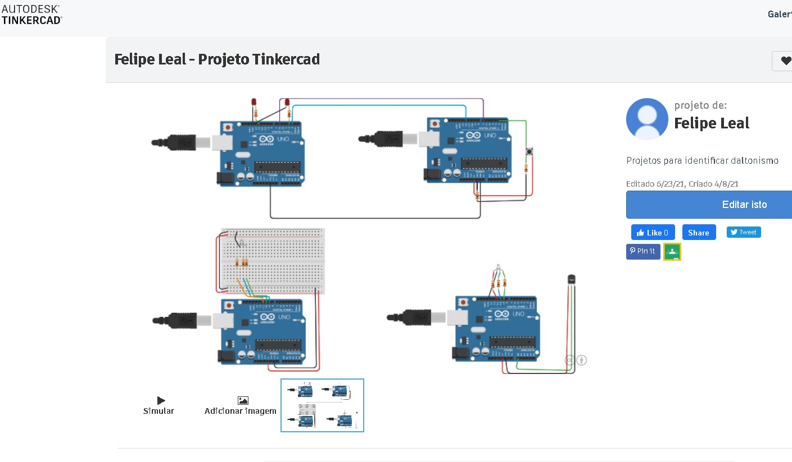
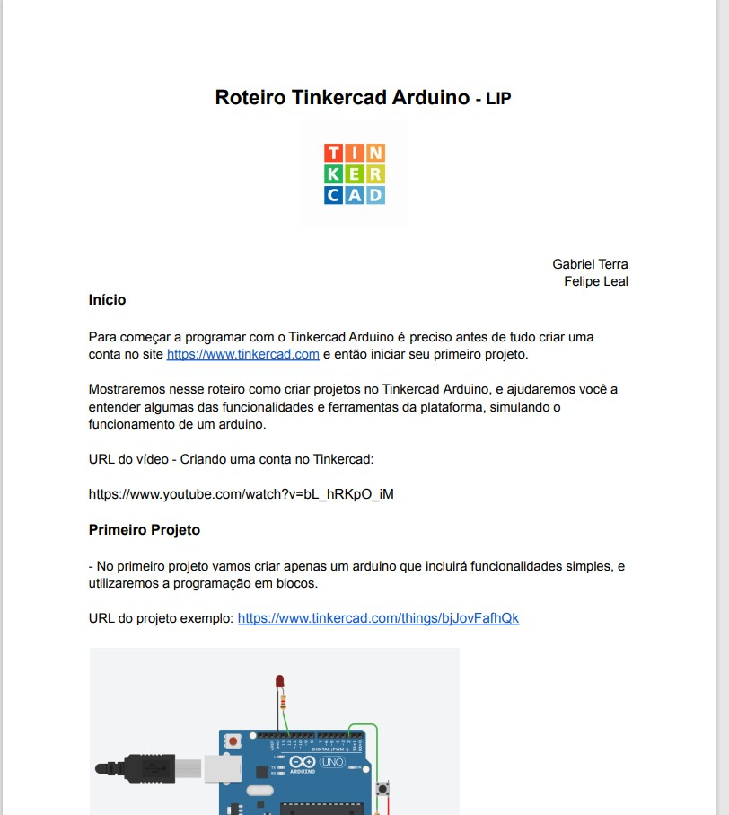

TRABALHOS
O primeiro trabalho que fiz nessa disciplina foi um alteração do jogo Pong no Scratch, que é uma plataforma online em que é possivel programar jogos numa linguagem em blocos e entender a da lógica de programação. Nesse projeto alterei o jogo quase por completo, e fim um novo jogo.
Nesse projeto eu iniciei minha jornada pelo Arduino. Aprendi os conceitos iniciais do arduino e como ele funciona. Fiz dois arduinos sozinhos com suas funcionalidades individuais e dois interligados e trabalhando juntos
Link do Projeto: Primeiro Projeto
Nesse projeto eu e meu parceiro Gabriel Terra fizemos um jogo Multiplayer. Produzimos um jogo quiz para conhecer melhor os profissionais da área da computação que ganharam prêmios e que são muito reconhecidos.
Fizemos também um site para explicar o jogo e mostrar os cientistas que usamos no Quiz.
Link do Site: Site Quiz Awards
Nesse projeto eu e meu parceiro Gabriel Terra fizemos um roteiro de iniciação a programação do Tinkercad Arduino, ensinando passo a passo através do próprio documento e através de vídeos a como inciar sua jornada pelo arduino, igualmente aconteceu conosco

Esse foi o primeiro projeto de programação em Html e Css que fizemos. Tivemos que desenvolver um portal de filmes trabalhando apenas na front-end. Nos ajudou a ter uma noção legal de como funciona a programação de interfaces web e foi um projeto muito divertido de realizar

Nesse projeto tivemos que fazer um portal de filmes parecido com o anterior, porem nesse integramos uma API, especificamente a API The Movie DB. Já tinhamos uma noção boa de Java Script e conseguiamos desenvolver isso. Avaliamos os sites dos próprios alunos
Link do site: Portal de Filmes 2
Com certeza esse foi o projeto que mais exigiu de nós, alunos. Após escolher um tema problema da sociedade atual, tinhamos que desenvolver uma solução para tal problema. Nosso tema foi Fake News, e então produzimos um site de notícias que desmente Fake news.
Tivemos que entregar da sprint 0 a sprint 4, e fomos avaliados individualmente em algum deles. Cada aluno do grupo deveria desenvolver um artefato por sprint. Através de Html, Css, Javascript e muito estresse, conseguimos desenvolver o site
Link do site: Site Fake News 2
Direitos reservados - Copyright 2021